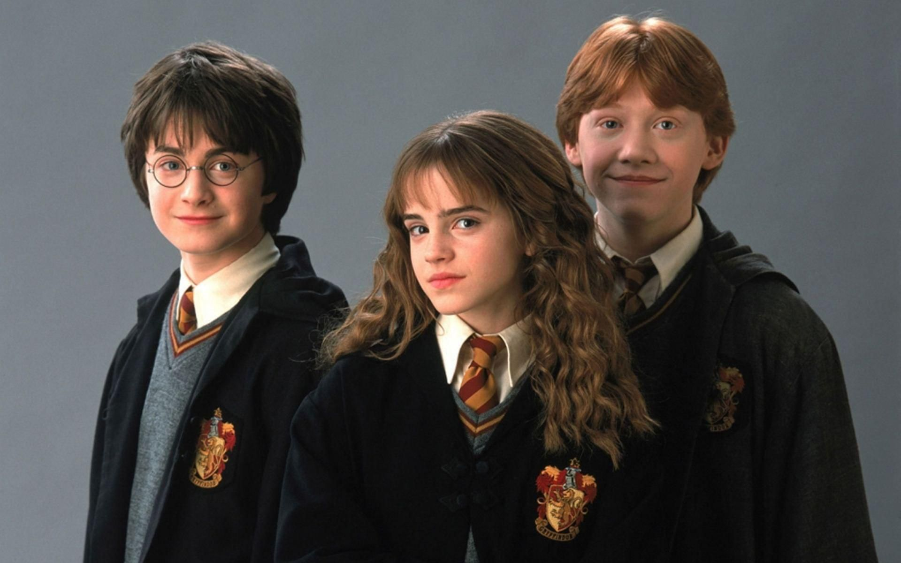

Let`s Start
Born in Yate, Rowling graduated with a degree in French from the University of Exeter in 1987 and began working temp jobs as a bilingual secretary. In 1990, the idea for the characters of Harry Potter came to her while she waited on a delayed train; later that year, her mother died of multiple sclerosis. In the seven years before publication of the first Harry Potter novel, Harry Potter and the Philosopher's Stone (1997), Rowling moved to Portugal, married, had a daughter, relocated to Scotland when her marriage failed, divorced, and earned a teaching certificate. She wrote while living on state assistance as a single parent, deeply affected by her mother's death. By 2008, Forbes had named her the world's highest-paid author.
Rowling completed Harry Potter and the Philosopher's Stone in June 1995. The initial draft included an illustration of Harry by a fireplace, showing a lightning-shaped scar on his forehead. Following an enthusiastic report from an early reader, Christopher Little Literary Agency agreed to represent Rowling. Her manuscript was submitted to twelve publishers, all of which rejected it. Barry Cunningham, who ran the children's literature department at Bloomsbury Publishing, bought it, after Nigel Newton, who headed Bloomsbury at the time, saw his eight-year-old daughter finish one chapter and want to keep reading. Rowling recalls Cunningham telling her, "You'll never make any money out of children's books, Jo." Rowling was awarded a writer's grant by the Scottish Arts Council to support her childcare costs and finances before Philosopher's Stone's publication, and to aid in writing the sequel, Chamber of Secrets. On 26 June 1997, Bloomsbury published Philosopher's Stone with an initial print run of 500 copies.Before Chamber of Secrets was published, Rowling had received £2,800 ($4,200) in royalties.